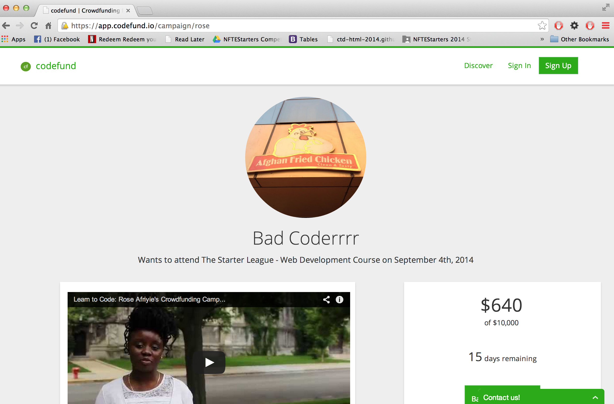

What I learned from Malcolm X about Overcoming Stereotype Threat in Coding
12/01/2014
When I think about stereotype threat, being at risk of confirming, as self-characteristic, a negative stereotype about one's group, I think of the things that trigger these moments of self-doubt for people of color. Perhaps the most unforgettable display of such a trigger can be seen in The Autobiography of Malcolm X:
He told me, "Malcolm, you ought to be thinking about a career. Have you
been giving it thought?"
The truth is, I hadn’t. I never have figured out why I told him, "Well, yes,
sir, I've been thinking I'd like to be a lawyer." Lansing certainly had no
lawyers—or doctors either—in those days, to hold up an image I might have
aspired to. All I really knew for certain was that a lawyer didn’t wash dishes, as
I was doing.
Mr. Ostrowski looked surprised, I remember, and leaned back in his chair
and clasped his hands behind his head. He kind of half-smiled and said,
"Malcolm, one of life’s first needs is for us to be realistic. Don't misunderstand
me, now. We all here like you, you know that. But you've got to be realistic
about being a nigger. A lawyer—that’s no realistic goal for a nigger. You need
to think about something you can be. You're good with your hands—making
things. Everybody admires your carpentry shop work. Why don’t you plan on
carpentry? People like you as a person—you'd get all kinds of work."
The more I thought afterwards about what he said, the more uneasy it
made me. It just kept treading around in my mind...It was then that I began to change—inside.
Source: Malcolm X. The Autobiography of Malcolm X. New York: Grove Press, Inc., 1964.
This excerpt highlights an explicit form of racism doled out to Malcolm that, those who have read the book will recall, cast a long shadow on Malcolm throughout his career as an activist. Towards the end of the book Malcolm seems to have a feeling of regret and returned back to this exchange with his teacher perhaps inviting the reader to ask who Malcolm might have been if he had more options to challenge racism in society, perhaps through a legal profession. What I also took from this passage is the importance of seeing someone in your community living the dreams that you hold for yourself and the power of spoken affirmation and encouragement to counteract stereotype threat.
Since embarking on the arduous journey that is coding I, too, have been triggered. This past summer, I set out to raise funds to learn how to code. My campaign was gaining momentum and was posted in online forums when my site got hacked.

As seen above, some hackers thought it would be funny to change my picture to that of a fried chicken shack, and swapped out my name with the phrase 'Bad Coderrrr'. I hadn't even built the site myself, but wound up the target of some hacker's ire and the self doubt surely followed. I suspected deeply that I might never amass the know-how to protect my site from hackers and that I might get good at coding after years of practice, but not good enough.
And then I remembered my community. I reached out to the listserv Systers and they encouraged me with information about grant resources and gave positive affirmations. I spoke with a close friend of mine Jasson Perez who reminded me that I was competent—that given instruction and practice I could learn anything and pointed to things that I had learned to do since we became friends. And, importantly, I sought refuge in Chicago's Women Developers Network at 1871. Some of the members are self-made women who have seen startups through a successful exit phase and others are women who have been coding for 20 years. They encouraged me to keep learning and talked about what it was like coding in the first 6 months. It helped.
I am not sure if there is a clear moral to this story. I believe that ending triggers of stereotype threat require interventions that go well past affirmations and mentorship. But I know that belonging to organizations and established communities are part of the solution when it comes to moral support and the strategic efforts that must be waged to end racism once and for all.
Variable Scoping
When, Where and When to Use Ruby's Variables
11/30/2014
David A. Black's The Well-Grounded Rubyist, has taught me a whole lot about variables. There a few kinds of variables Ruby supports. Let's talk about these, where they are accessible and when they would come in handy:
local variable - these are variables that mainly come into play when looking at specific blocks, and cannot be accessed outside of those blocks of code.
@instance_variable - You know an instance variable when you see it because it has one @ sign. It can be used multiple times in a class across methods.
@@class_variable - Class variables have 2 @ signs. Class variables are available in all instances of the class.
$global_variable - They have the $ sign before the name of the variable. You can access and write the values of global variables in every instance, in and outside of the class.
CONSTANT - Constant variables are conveyed through all capital letters. Constant variables but they should be used carefully because the are difficult to change after the fact.
Swooning at Clarity
The Moment Code Makes Sense
11/20/2014
I am still coming down from a Code High that I had with Darrin Reeves last week. It was somewhere in the middle of the Cipher challenge. We were pseudocoding and a fog was finally lifted. Darrin is a patient guy who has had more experience with computers and programming than I. Even though he can complete most of his challenges in 15 minutes, he soldiers through with me if something is unclear and he uses his knowledge -- and lightly tinged Jamaican accent -- to help me understand. The methods, the conditionals, the syntax and the structure started to make sense, and for that hour it was clear how one might approach a challenge like deciphering encrypted messages with Ruby code.
Other moments have happened since then that remind me when I am in the thick of things that I am still dedicated to learn more code. In my spare time, I am a membership co-chair for BYP100, a Black youth organization headquartered on the South Side of Chicago. Through the genius of Twilio and my homegurl Ellie Day who helps sleuth out syntax errors, I deployed a mass text message to our GOTV lists using Ruby concepts such as an "array" (a list of items, in this case numbers) and the ".each" (a method that performs an action in each item in an array) method. I love doing real-world shit with code. I smile wide when my command line "puts "Sent message to #{number}" over and over and over. Because that means code works and it can work for an outcome I want to create. Sending texts may be some super simple code compared to making a Bingo game, but it is something that was not easily accessible before I learned Ruby.
Feedback is also an important part of coding that I value. I love Guided Pairing Sessions. Sometimes my feedback has been a bummer when I have paired with people who have been significantly more advanced and it feels like I don't have as much to contribute. But next time I will prepare more in my quest of more code highs. I am happy to be growing and learning and most of all -- coding.
Schooling you on Ruby Classes
Class, Instance Variables, and Instance Methods
11/20/2014
According to David A. Black's The Well-Grounded Rubyist, classes are, at heart, a way to organize objects and methods. They simply define groups of behavior and functionality. Some features of a class include:
they begin with a capital letter
there are built in classes such as "String" and "Array" etc.
new classes can be written from scratch; and existing classes can be changed.
Another related concept is an instance variable. It helps store information for individual objects. Some features of an instance variable include:
start with one "@" sign.
starts with a lower case letter and can also have an underscore, forward slashes
Another related concept is an instance method which are methods that are shared by all instances of that class. Some features of an instance method include:
defined inside a class
intended for use by all methods inside the class
Now let's see how this all works together below:
class CreditCard
def initialize(credit_card_number)
@credit_card_number = credit_card_number
end
end
CreditCard is the Class, @credit_card_number is an instance variable. An instance method utilized in this example is initialize, which can be called on every instance of the CreditCard class. This is just a basic preview but something I want to look into more when I get a stronger foundation in Ruby.
Enumerable Methods
A Brief post on Map! and Why It Matters
11/2/2014
Enumerable methods are defined in Ruby Docs as "a mixin provides collection classes with several traversal and searching methods, and with the ability to sort." Rubyist Robert Quails discusses a mixin as follows:
In most languages, code sharing is only possible through inheritance, and inheritance is generally limited to one parent class. In addition to classes, Ruby has modules which are containers for methods and constants. If you want to write code once and share it between a bunch of unrelated classes, you can put it in modules to be “mixed in” with your classes.
In a recent exercise at Dev Bootcamp I reviewed one enumerable method called map!. map! is a destructive method that takes an enumerable object for each element, in this case an element of an array, and replaces the element with the value returned from the block. Check out how I used it here:
def my_array_modification_method(source, thing_to_modify)
source.map! do |x|
(x.is_a?(Integer)) ? x + thing_to_modify : x
end
In the above example I used map! to check and see whether integers were in an array. If they were, the method above enables me to add some number to those integers and change the original array. It's a concept that I hope to explore more but it is definitely a useful one when you want to look through a list of items.
The Key To Inclusive Software Solutions
Why learning entrepreneurship is just as important as learning how to code
11/2/14
In the contemporary digital era, there is a huge push for learning how to code. Large tech companies are increasingly investing in women and people of color to learn programming languages. Yet, learning how to code is only half of the equation if we want to have software solutions applied to challenges that affect low-income people and underrepresented groups. Another critical investment we must make is in equipping women and people of color with the skills needed to be entrepreneurs.
The founding members of any startup will ultimately line the rank of officer positions and higher level management. Priorities for any tech company -- which are mostly top-down -- are often set by these decision makers. This includes calls about whether to take up challenges for lower-income groups and these decisions are often not made by diverse teams.
Data crunched on 20 Tech companies in 2013, was very revealing about this dearth of diverse decision makers. A look at 5 large tech companies shows no woman in an officer or high level management role at 3 out of 5 companies -- the remaining 2 had none. For African Americans there were no more than 4 in this same category with two companies having none.
Some encouraging models in this arena include recent attempts by Business Schools to teach web development. This is important because business schools are traditionally more diverse than medicine and law programs allowing for some ground to be gained. Inversely, however, coding schools should also be more overt about offering skills on sustaining a startup. This can be achieved by creating stronger bonds with accelerators. In this way, they provide students with curriculum that equips them to be as efficient with code as they are with budgets, plans to establish private and public partnerships and overall management.
This is how we build inclusive software solutions of the future.
Fork in the Code?
On Coding Challenges -- No Boots, Not Those
Date 10/26/14
Coding is a struggle. While I concede that it is totally learnable, external factors often have to be managed to facilitate a meaningful learning experience. The biggest challenge for me has been climbing the learning curve of Virtual Machines, which was the best chance I had to get my Windows system to be code-ready. I slowly learned that in the beginning, it can impact the way I download programs essential for programming, whether or not internet connectivity will be seemless, and the overall interface in which I field error messages. I was lucky to have a fellow cohort member mentor me through this process, and feel like I have hit my stride through tons of trial and error and the robust resources on Digital Ocean.
After firefighting technical challenges, I also had to take some time to think about how my learning style affects the way I retain knowledge. I am a kinesthetic learner meaning I learn by doing. That means that going through repetitive exercises in codecademy or treehouse are much more effective for me to learn than finishing Pine chapters in one sitting. I struggle a lot with applying concepts after I have just read it once or have seen it in a video. I need to do. Do again. And do again. So this poses some time management challenges for me.
So, to be successful at DBC, I have had to flex my time management muscles and really be introspective about what helps me produce my best work. I learned a lot from the time management resources DBC personally offers and routinely have a timer tracking the length it takes for me to complete challenges. I have also invested in a co-working space that is affirming to ensure I am not couch-coding (which is a total slow-downer).
I also have to consciously work on my attitude toward coding. I have had a tendency to view it as this larger than life thing that is as vast as the internet, so vast it feels unlearnable. I also excelled more in writing than math growing up, so sometimes I let that psych me out. I counteract this by reciting affirming poems and sayings on my caffeine runs. I recited this one 40 times today. I also have to take my thinking style into account. I am a Concrete Random Thinker: I am a brainstormer, self-directed, experimenter. It's most digestible for me to frame things I learn in the context of my own experiences.
At the end of the day, I try to invoke a saying of a good friend of mine MJ: Always Learning. MJ's credo is consistent with the tenets of a “growth intelligence mindset,” one that seeks challenge and believes that failure is not a proof of unintelligence but an encouraging springboard for growth and development." So I am not beating myself up when I take too long to learn something. I am being proactive and really investing time in tracking how long things take so that next week and the week after -- I have better assessment of how long it is going to take ao I can allocate and cut accordingly.
Like, for instance this message was written to you in 30 minutes. How much you want to bet I could get this down to 20 by Phase 1?
To Array or Hash? -- That is the Question!
Applying Hashes and Arrays to What I Do Everyday
Date 10/26/14
Arrays and Hashes are really exciting for me. They were the point in my budding programming career when I fell in love with code. The ability to store lots of information and access it is really vital to the work I do everyday. My work in Black youth led justice movements has really been propelled by the ability to put phone numbers in an array and utilize the Twilio API to connect with activists to remind them about a protest or a meeting.
Additionally, before I am able to lobby the city to put eligibility requirements for social services in city, state, county open data portals, eligibility requirements for social services are stored in hashes for so they can easily inform people whether they qualify in the app I have been co-developing, mRelief.
So, what are these things?
Arrays
According to Chris Pine's Learn to Program arrays are a list in your computer wherein every slot in the list acts like a variable and you can see what object a particular slot points to. This great when you want to store things in a numerical order. The process of arrays usually start with assigning them to a variable You could also start out with an empty array and assign a slot. Here is an example I came up with on the fly:
I could go on to list these until I came up with the top rappers for 2014. Other important things to call out about arrays, they start at 0, not 1 in terms of how they order information.
Hashes
Hashes, are defined at codecademy.com as a collection of key-value pairs. Hash syntax, code-speak for punctuation, looks like this:
Essentially, hashes are used to store pieces of information that wouldn't intuitively be listed in numerical order. This is just a brief post to get this concept across. As I continue to jot down my process coming into software development, I hope to delve even further with these concepts.
CSS: Classes vs. IDs
10/26/14
What are the best CSS practices associated with using classes vs. IDs?
What is CSS?
Let’s talk Cascading Style Sheets - CSS. CSS, according, to codecademy is a language used to describe the appearance and formatting of your HTML.
CSS is important because it allows you to style your website in a more efficient way and with a sheet that can be applied to multiple different web pages.
Two CSS Selectors: ID and Class
Classes come in handy when you have a bunch of elements that should all receive the same styling. Classes are given to HTML elements with the word class and an equals sign, like so:
<div class="square"></div>
Classes are identified in CSS with a dot (.) like this.
IDs are useful when you have exactly one element that should receive a certain kind of styling. IDs are given to HTML elements with the word id and an equals sign:
<div id="first"></div>
IDs are identified in CSS with a pound sign (#):
An article on stackoverflow makes this analogy about classes vs. ids to help understand which is used for one instance of something in an html document vs. many:
ID = Student ID (Schools don't issue identical IDs to multiple students)
CLASS = Group of Students (Like 'The Biology Class' will be going on a fieldtrip)
Happy CSSing!
The Culture of Dev BootCamp
On Jumping off the Code Cliff
10/20/14
Accountability. Ownership. Passion. These are the first words that comes to mind when I think about DBC and listen to the fireside chat. Accountability -- because DBC truly creates a space of accountability and checking in from GPS sessions to weekly deadlines. Ownership -- because what I learn depends on me. Passion because I can't jump off this cliff and have the grit to push through to the end unless I am really passionate about what being developer will help me create in the world.
So far, I am really, really overwhelmed -- but in a good way. I definitely feel like I have jumped off of a cliff in trying to learn what feels so intricate and complex -- especially doing so on a Windows machine which has unexpected glitches.
DBC feels very thorough. I have had my share of higher education, this is the first place where I have studied where I have a good grasp of how I best learn and what I want my learning to apply to. And for that I am very grateful.
As far as the DBC culture, I feel like I am totally a cook in the code kitchen. I am not going to be a passive consumer of code. But at the same time, I am wondering how to manage competing interests -- my startup and learning how to code effectively. I believe that I have what it takes to perservere and to identify what I need to be successful in the educational arena and the startup arena.
I am grateful to be on this journey!
Giddy About Github?
Date 10/19/14
Week 1 of DBC illuminates Github
Git can be compared to an old school digital rolodex where you store information. Only instead of storing info on your friends that information is code. It lives in a finite place, say, on your computer and you can make additions to the rolodex if someone changed their name.
Github, not to be confused with Git, takes this to the next level. It would be like if your rolodex was instead live on the web, where you and friends could contribute. It is similar to how Google+ and Gmail work together to update your contacts -- both by your contributions and by your contacts themselves.
What's more is that both and Github work together to produce the brilliance that is version control. Version control is solving for a problem that often happens when one works on content: losing changes. Github helps with this because it is a central platform where as many as hundreds of collaborators who are working together can manage the different versions of their project.
What does this look like in real time?
Usually this will involve a step like pushing to a branch (almost like sharing a draft with friends before sharing the final copy)
Then you will do a pull request to ensure that someone ( a teammate or superior) can approve their changes before integrating them into the final document.
Then the last step is to merge the changes into the master branch (or final document)